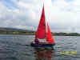
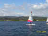
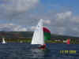
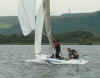
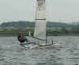
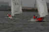
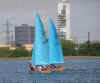
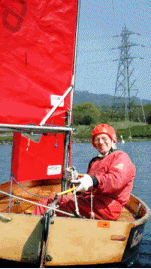

The General Handicap Fleet News
Handicap Fleet
The Handicap Class includes all the boats in the Club which are not in the established Laser and Solo Classes. As new boats are being produced, we end up with a wide range of boats of different size and performance in the Handicap Class.
A race amongst these boats uses a handicap system which compares the performance rating of each boat according to its PYR, which is short for Portsmouth Yardstick Rating. These ratings have been established over time by the RYA,. the Royal Yachting Association, under whose rules we race. They are periodically revised from results which are annually returned to the RYA from sailing clubs.
The results of a race are determined by how a boat sails according to its handicap, based on the time taken to sail over a distance.
Faster boats often sail more laps than slower boats, but the result depends upon how well the boat sails according to it’s handicap. Frequently, slow boats fare well in the results, not only the skill of the helmsman, but also the lottery of the changing wind conditions affect the outcome.
Handicap racing, therefore, is more of a challenge to sail as fast as conditions allow, rather than tactically trying to outsmart your rivals on a boat for boat basis. If there happens to be a few similar boats there is added interest as it then becomes a race within a race.
At the end of a race, the time is noted when a boat crosses the finishing line and this time, together with the number of laps sailed, is computed to work out the time taken per lap to determine the positions. Therefore the results are not known until some time after the race.
The start of a Handicap race is a very complex affair with high speed machines mixing it with lesser mortals, but once started the boats become sorted out in a virtual procession, consequently there are fewer incidents compared with Class racing where rivalry is known to be close and intense.
We are a friendly Class and welcome newcomers to our fold. Make yourselves known and we will try to encourage you in your introduction to the sport of sailing.
The club organises several Handicap races throughout the year which are open to non members. These are the Bank Holiday Monday one day events , the well known October Regatta, the Club Pursuit Race, the Autumn ‘Frostbite’ Series, the Winter ‘Blue Robin’ Series and the Christmas events. Details of these events can be found in the Club Booklet on this website.
Feel welcome to join us. Once you have sailed on our ‘pond’ you will find it hard to keep away !
|
Meet The Fleet








|

{kind=link}
{kind=link}
{kind=link}
{kind=link}
{kind=link}
.jpg){kind=link}
{kind=link}
{kind=link}